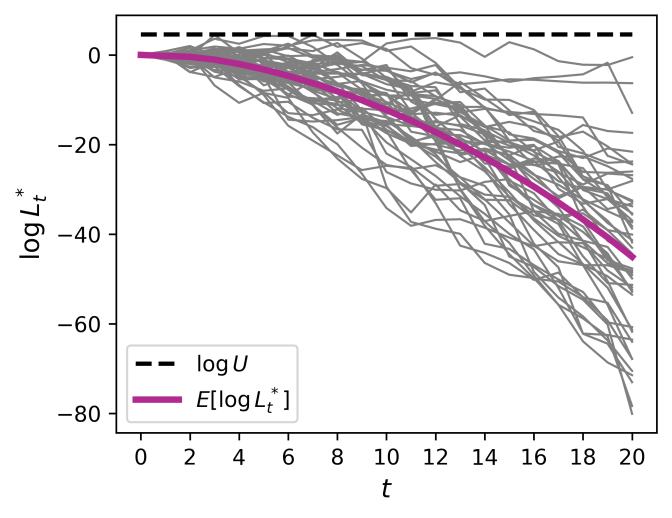

LQ Control · Sequential Hypothesis Testing
Deception in Discrete-Time Linear-Quadratic Control
How can a controller retain strong performance while making its behavior harder for an observer to identify? This work studies deceptive controllers for discrete-time linear-quadratic systems under adversarial detection constraints, uses sequential hypothesis testing, and characterizes the resulting tradeoff.
